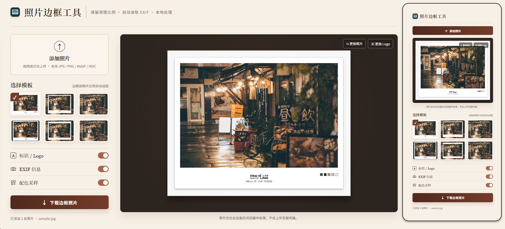

Light Frame Studio Web
轻量、纯浏览器端的照片加边框工具。上传一张照片，选择模板，即可生成带有 Logo、拍摄信息与配色采样的边框照片。
网页界面图

关于工具
照片边框工具 Web 面向需要快速整理、展示摄影作品的使用场景。不需要安装软件、注册账号或上传照片：所有读取、模板渲染、色彩采样与导出操作均在当前设备的浏览器内完成。
工具以保留原图比例为基础原则。无论横图或竖图，主图都会按原始比例置入边框，不会为了适配模板而裁切画面；边框尺寸与信息区域会随照片比例自动调整。
功能特性
单张照片本地处理
- 点击或拖拽上传单张照片
- 支持 JPG、JPEG、PNG、WebP、HEIC 与 HEIF
- HEIC / HEIF 在本机转换为 JPEG，不会发送至服务器
- 适配桌面与手机浏览器
六种边框模板
- 内置 6 种摄影作品展示模板，按 1、3、5 / 2、4、6 排列
- 切换模板后，预览与导出保持一致
- 模板 3 至 6 使用照片延展背景与模糊效果
- 横图、竖图均保留原始比例，不裁切主图
可控制的展示信息
- 可显示默认 Logo，或替换为本地 Logo 图片
- 自动读取可用的焦距、光圈、快门与 ISO
- 照片没有可用 EXIF 时自动关闭 EXIF 展示
- 自动提取 5 个代表性色彩，可单独开关显示
实时预览与导出
- 上传后立即生成边框预览
- 更换照片、Logo、模板或展示开关后实时更新
- 导出 JPG 格式的边框照片
- 导出文件以原文件名为基础，并使用英文模板后缀
快速开始
1. 打开网页版工具。
2. 点击“添加照片”，或将一张照片拖入上传区域。
3. 从 6 个模板中选择需要的边框效果。
4. 按需要开关 Logo、EXIF 信息与配色采样；也可更换本地 Logo 图片。
5. 确认预览后，点击“下载边框照片”保存 JPG 文件。
2. 点击“添加照片”，或将一张照片拖入上传区域。
3. 从 6 个模板中选择需要的边框效果。
4. 按需要开关 Logo、EXIF 信息与配色采样；也可更换本地 Logo 图片。
5. 确认预览后，点击“下载边框照片”保存 JPG 文件。
隐私优先
照片、Logo 和 EXIF 信息只在本机浏览器内处理；无需登录，不建立图库，也不会自动扫描本地目录。工具不会覆盖原始照片，导出时由你手动选择保存位置。
使用说明
- 建议使用最新版 Chrome、Edge、Safari 或 Android Chrome。
- HEIC / HEIF 转换后的 JPEG 不保留原格式中的 EXIF，因此 EXIF 展示会自动关闭。
- 当前以单张作品制作与手动下载为目标，不提供批量处理、自动覆盖原文件或本地目录扫描。
- 网页可直接在线使用；下载源代码后，也可在本机用浏览器打开 index.html 使用。